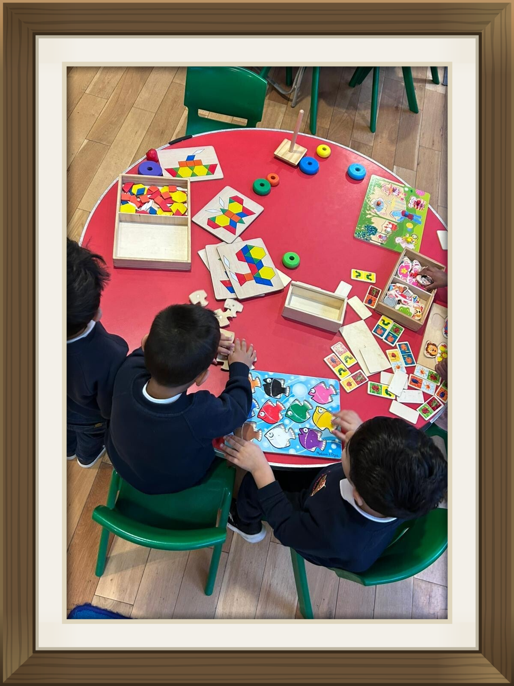

Funded Childcare for 2 to 5 Year Olds
We offer flexible scheduling options to suit working parents. Whether using 15 hours universal entitlement or 30 hours extended working parent funding, our team helps streamline the voucher application process.
Tax-Free Childcare and student childcare grants are also gladly accepted.
Session Fees & Government Funding
We aim to make quality Montessori education accessible. To support the needs of our families, we offer two structured 3-hour sessions each day: Morning (9:00am – 12:00pm) and Afternoon (12:00pm – 3:00pm).
| Age Group | Session Timings | Cost Per Session (Private) | Government Funding Entitlement |
|---|---|---|---|
| 2-Year-Olds | 9:00 AM – 12:00 PM OR 12:00 PM – 3:00 PM | £30.00 / session | Up to 15 hours / week funded for eligible families |
| 3–5-Year-Olds | 9:00 AM – 12:00 PM OR 12:00 PM – 3:00 PM | £25.00 / session | 15 hours Universal Funding for all families |
| 3–5-Year-Olds (Extended) | Full Day (9:00 AM – 3:00 PM · Both Sessions) | £50.00 / day | Up to 30 hours / week for eligible working families |